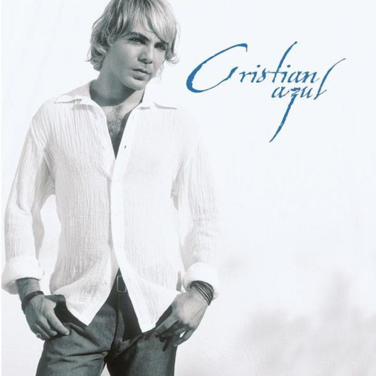

Cancionero |
||
|
|
Azul Fue una mañana que yo te encontréCuando la brisa besaba tu dulce piel Tus ojos tristes que al ver adore La noche que yo te ame, eh Azul, cuando en silencio por fin te bese Azul, sentí muy dentro nacer este amor Azul, hoy miro al cielo y en ti puedo ver La estrella que siempre soñé Azul, y es que este amor es azul como el mar Azul, como de tu mirada nació mi ilusión Azul como una lagrima cuando hay perdón Tan puro y tan azul que embriago el corazón Es que este amor es azul como el mar Azul, como el azul del cielo nació entre los dos Azul, como el lucero de nuestra pasión Un manantial azul que me llena de amor Como el milagro que tanto espere Eres la niña que siempre busque Azul, es tu inocencia que quiero entender Tu príncipe azul yo seré Azul, es mi locura si estoy junto a ti Azul, rayo de luna serás para mí Azul, con la lluvia pintada de azul Por siempre serás solo tú Azul, y es que este amor es azul como el mar Azul, como de tu mirada nació mi ilusión Azul como una lagrima cuando hay perdón Tan puro y tan azul que embriago el corazón Es que este amor es azul como el mar Azul, como el azul del cielo nació entre los dos Azul, como el lucero de nuestra pasión Un manantial azul que me llena de amor Azul, y es que este amor es azul como el mar Azul, como de tu mirada nació mi ilusión Azul como una lagrima cuando hay perdón Tan puro y tan azul que embriago el corazón Es que este amor es azul como el mar Azul, como el azul del cielo nació entre los dos Azul, como el lucero de nuestra pasión Un manantial azul que me llena de amor Es que este amor es azul como el mar Azul, como de tu mirada nació mi ilusión Azul como una lagrima cuando hay perdón Tan puro y tan azul que embriago el corazón (uh-eh-uh-eh-uh-eh-eh-eh) Y es que este amor es azul como el mar Azul, como el azul del cielo nació entre los dos Azul, como el lucero de nuestra pasión Un manantial azul que me llena de amor Y es que este amor es azul como el mar Azul, como de tu mirada nació mi ilusión Azul como una lagrima cuando hay perdón Tan puro y tan azul que embriago el corazón (uh-eh-ih-eh) Y es que este amor es azul como el mar Azul, como el azul del cielo nació entre los dos Azul, como el lucero de nuestra pasión Un manantial azul que me llena de amor |
|
| | ||